珍寺パトロール、お次はモンユア郊外の
タウンボッデーパゴダへと向かった。
ここは数あるミャンマーの寺の中でもどうかしているんじゃないか、と思えるほど派手で、装飾が面白すぎる寺である。
個人的には
世界ランキングのベスト5に入ると思っている素晴らしき寺院だ。
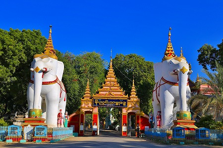
入り口には巨大な象さんがお出迎え。
コレだけでも夢の国に誘ってくれそうじゃありませんか？
門を潜るとすぐ右手に現れるのがこちら。
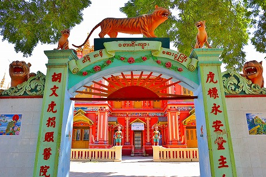
胡文虎捐賑醫院とある。
胡文虎とは軟膏タイガーバームを作った故兄弟の兄の名である。
当サイトではお馴染みの香港
タイガーバームガーデン、シンガポールの
ハウパーヴィラを作った人物としてご記憶の方もいらっしゃるだろう。
この建物はつまり胡文虎が建てた病院なのだ。
ちなみに虎標永安堂主人とは虎印のタイガーバームを販売していた会社永安堂の主人という意味。
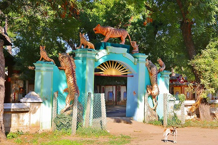
門の裏側にもびっしり虎が群がってます。
手前の痩せたわんこは虎が怖いのか妙にオドオドしてました…。
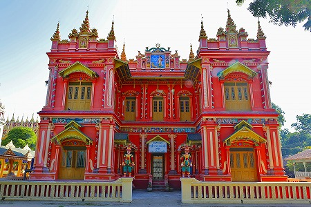
まるでおとぎの国に出てきそうな建物ではないか。
胡文虎、胡文豹はここミャンマーのヤンゴンで華僑の子として生まれ、永安堂を起ち上げた。
我々にしてみれば中国の塗り薬、というイメージが強いが、実はタイガーバームはミャンマー生まれの軟膏なのだ。
いや、最早お若い方々はタイガーバーム自体御存じありませんか、そうですか…。
いずれにせよ胡兄弟はタイガーバームの膨大な売り上げをアジア各地で慈善事業や病院建設などにつぎ込んできた。
タイガーバームガーデンやハウパーヴィラもその一環だったんですね。
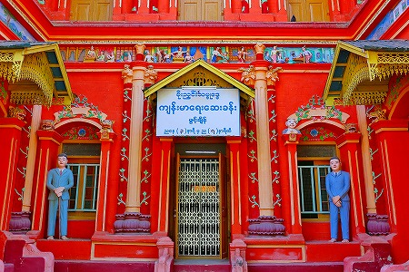
入り口には胡文虎自らがお出迎え。
ミャンマーではお寺の境内は裸足になるルールなので
スーツ姿でもちゃあんと裸足でいるよ。
左右に立っている、という事は片方は胡文豹、ということなのか？
中も見たかったが残念ながらお休みだったみたい。
さて、歩を進めよう。
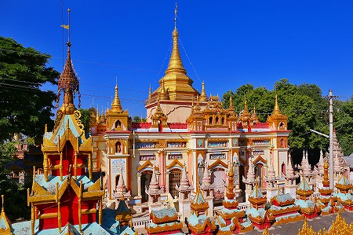
寺院内には数多くの建物が点在しているが、そのどれもがお菓子の城のように派手で不思議な造形をしている。
この建物なども伝統的な
ビルマの仏教建築と西洋風の建築様式が混ざり合ったスタイルとなっている。
モンユアやザガインではこのような洋風とビルマ風が混ざった建築様式の寺をよく見かけるが、それにしてもこんなにこってりした建物はあまり見かけない。
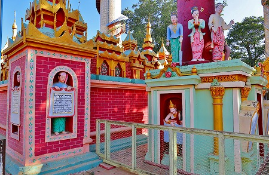
色もパステルカラーを多用し、一見どこの国の建物なのかよく判らない風味に仕上がっている。
その国籍不明な感じが、ミャンマーの、というかマンダレー〜モンユア周辺の地域の特性なのかもしれない。
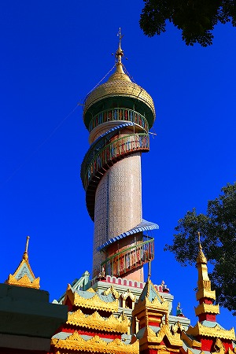
これもまた様々な建築様式を呑みこんだかのような塔。
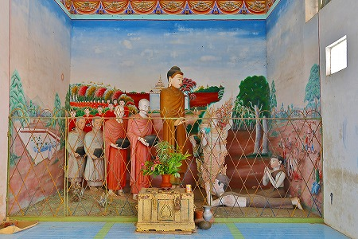
足元には様々なエピソードのジオラマが並んでいる。
塔に登ってみると…
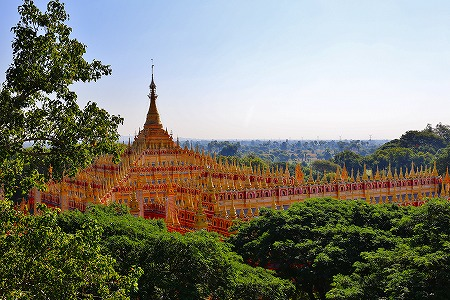
うひょー！ナイスビュー！
本堂に相当するメインのパゴダが良く見える。
中央の尖塔の周りに無数の小さな尖塔が林立している。
それはまるで針の山のようだ。
早速、メインのパゴダに。
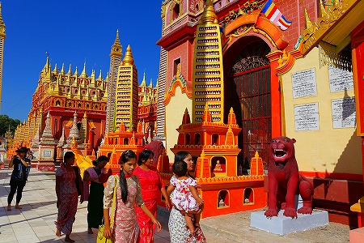
ココもまた、洋風とビルマ風が入り混じったおとぎの国の城みたいな建物だ。
しかも所々に動物や神様の像が並んでいて忙しいことこの上なし。
さらにあちこちに細かい装飾が施されていて、中々先に進めない。
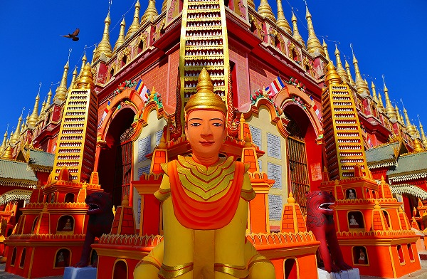
もう、うっとりするしかないですよ。
で、内部。
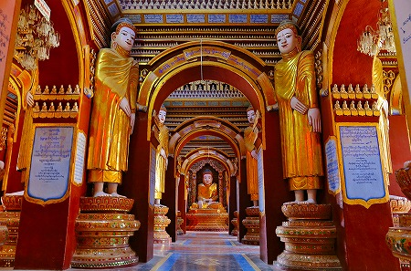
この寺には
60万体の仏像があるという。
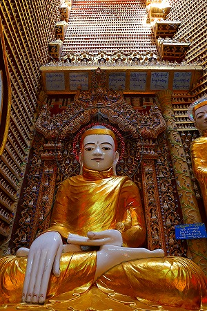
確かに壁や柱などにも細かい仏像がびっしり並んでいる。
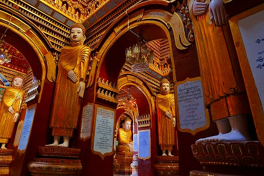
ミャンマーの大きなパゴダは基本十字型の平面で構成されている。
なので、日本のお寺のように門を潜って参道を進んで諸々お堂があって本堂があって…というような一方通行の平面ではなく、本堂の中央にメインの仏像があって、それを囲むように他の仏像が配置され、さらにその本堂から東西南北に参道が4本広がっている、という形式が多い。
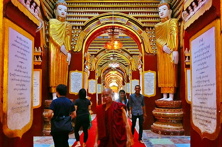
ここのパゴダは規模が大きく、いくつものサブの建物が数多く連結しているので、曼荼羅図のように十字型の平面が連続して連結されている。
つまりメインの十字路の四隅に少し小さい十字型の通路があり、さらにそれぞれの通路に対してより小さい十字路が…という構造になっている。
なので一見単純なのだが、メインの通路を見失ってしまうと、途端に構造が判りにくくなってしまい、迷路のようになってしまうのだ。
単純にして複雑。これぞ究極の迷路かも知れない。
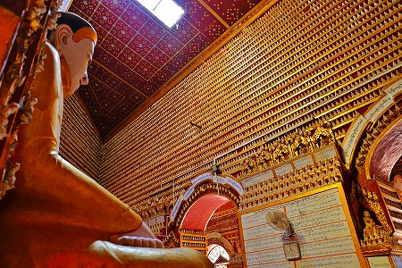
しかも全ての部屋はこのように仏像で埋め尽くされているのだ。
外側の針の山も凄かったが中の濃密具合も凄かった！
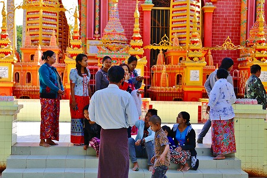
団体の皆さんもあまりの派手さにびっくりしてました。
まったくもって素晴らしい寺だ。エクセレント&マービュラス！
駐車場で見かけた元新城市のバス。
ミャンマーでは日本の中古車が人気なのだ。
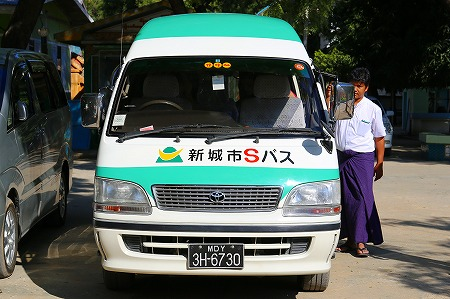
しかも塗装し直さないで敢えてそのまま乗っているケースが多い。
幼稚園の園バスがそのまま路線バスに使われていて、大人がぎゅうぎゅう詰めで乗っていたのには思わず笑ってしまった。
そうえいば、マンダレー空港内のバスは都バスだったっけ。思わず降車ボタンを押しそうになってしまったよ。
次のパトロールにGO！